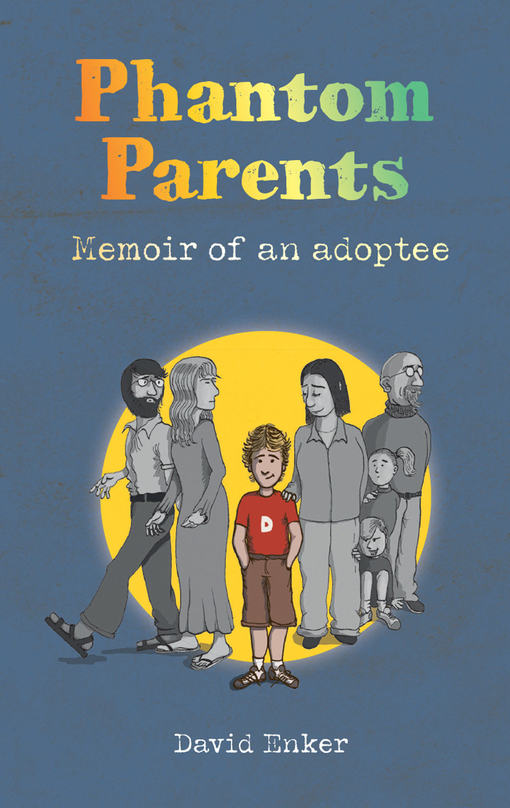
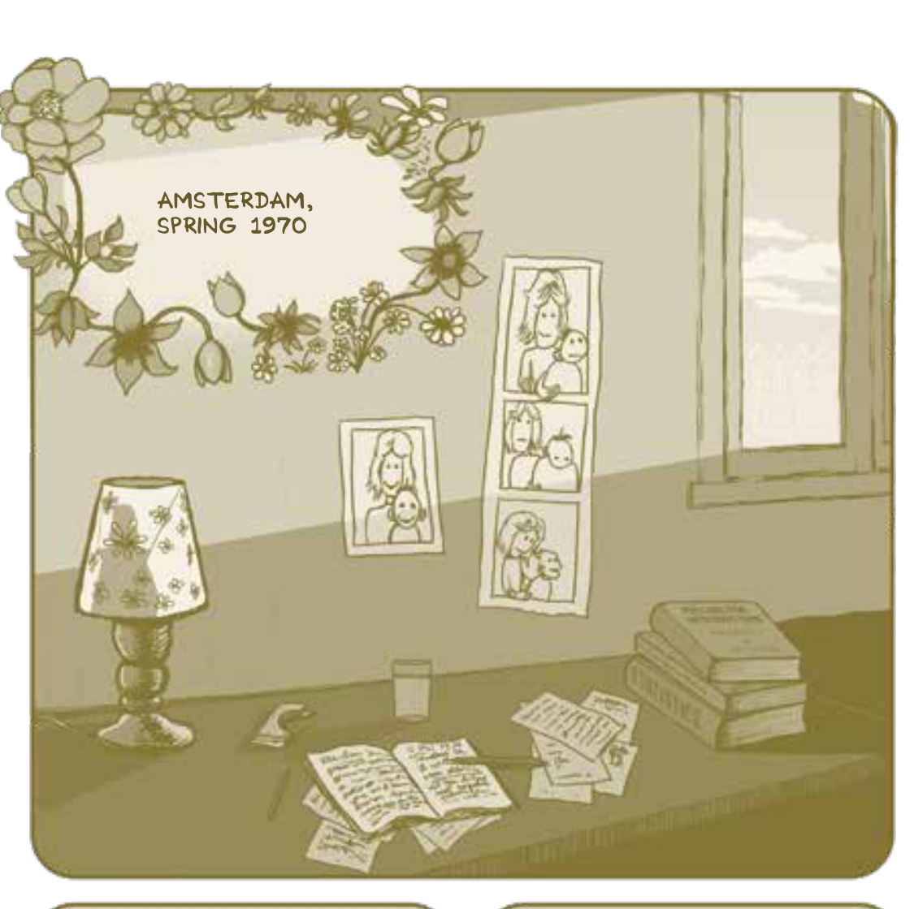
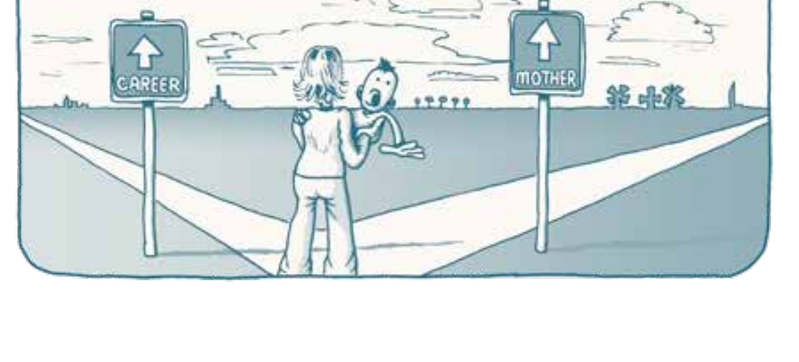
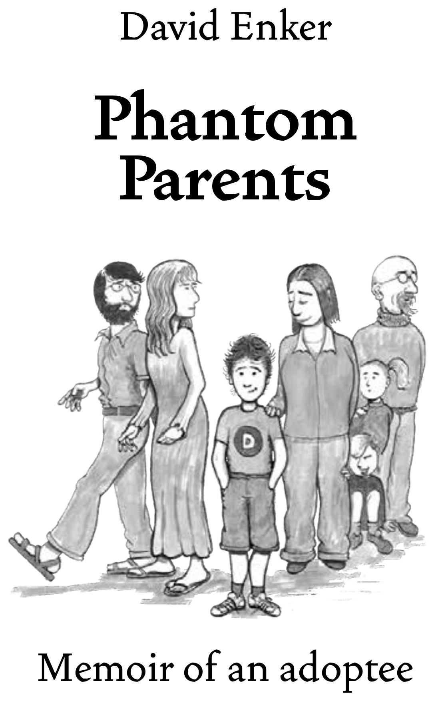

A graphic memoir of an adoptee — and the four parents, two given and two chosen, who shaped him before he could choose anything at all.
Look inside the book →
Why does a father have to protect his son? … the world we live in can sometimes be very tough. And it's only fair that everyone who's born into it should have at least one person who'll be there to protect him.Etgar Keret, The Seven Good Years — opening epigraph
“Tell me about your parents.”
It was a late summer evening when a therapist laid out the plan: to answer that one ordinary question, David Enker would have to answer it four times over. Relinquished at three months old in Amsterdam and raised in a non‑religious Dutch family, he grew up with a set of parents who loved him and a second, invisible set he carried without ever having met — a biological mother and father whose faces he could only reconstruct from fragments.
Phantom Parents is the book that came out of answering the question properly: a hand‑drawn journey from a bedroom in 1970s Amsterdam to The Hague, Detroit, London, Tel Aviv and back to Haarlem, tracing a Jewish and Holocaust‑marked lineage he was born into but not raised in, alongside the ordinary, unglamorous love of the family that raised him instead.
An adoptee's identity rarely runs in a straight line. It's a small constellation — two pulls of nature, two pulls of nurture — each with its own gravity on the child in the middle.
Rosy perfume and cigarettes; wet feet full of damp sand at the beach.
Imprint: realising she is just like me.
Fresh bread from the bakery on the second floor.
Imprint: learning that love is real and permanent.
Metal‑framed glasses and a dark, unreachable portal.
Imprint: understanding the anticipation of identity.
Nakedness, and skin as thin as paper.
Imprint: seeing the naked soul behind the physical form.
Every chapter carries its own duotone — sepia for Amsterdam, slate for Detroit — panels drawn and lettered by David Enker himself.



The book is laid out as a route, not a theme — each part named for the two cities it moves between.
A companion playlist curated for the book — scan the QR codes throughout the memoir or listen here to the complete 26-track journey.
Self‑published, Amsterdam Academy Press, 2023
Crowdfunded via voordekunst.nl
978‑90‑903694‑4‑0
Kristin Anderson
Lisa Hall, Lemonberry
Tipoprint B.V., NL
“To Ailish & Yaron.”